Turma do
Turma do Histórias que a Turma já conta
São 30, do Antigo Testamento à primeira igreja. Cada uma vira um episódio feito para a sua turma: você escolhe a lição e a idade das crianças, revisa o roteiro e baixa o vídeo.
Antigo Testamento
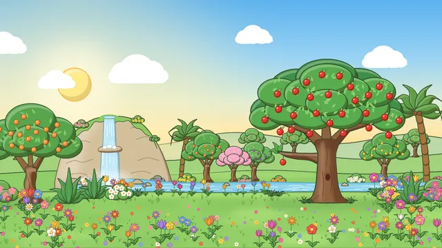
Adão e Eva no jardimGênesis 2.4–3.24Criar este episódio A arca de NoéGênesis 6.9–9.17Criar este episódio
A arca de NoéGênesis 6.9–9.17Criar este episódio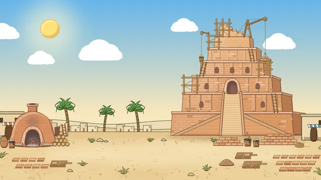
A torre de BabelGênesis 11.1-9Criar este episódio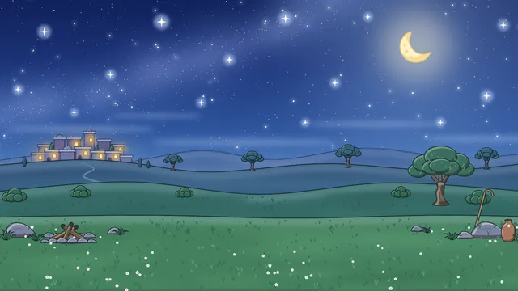
Abraão e as estrelasGênesis 15.1-6Criar este episódio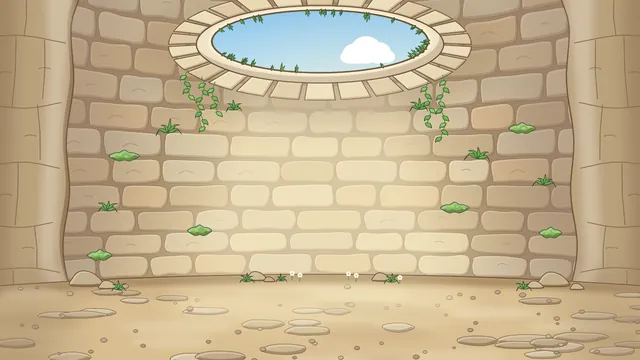
José e seus irmãosGênesis 37.12-36Criar este episódio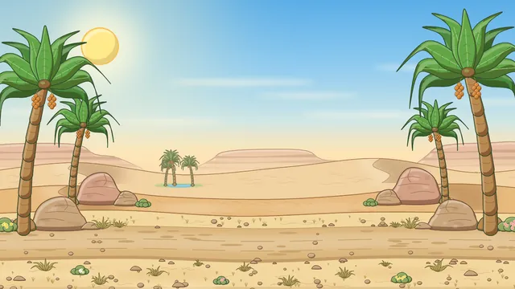
Moisés e a sarça ardenteÊxodo 3.1-12Criar este episódio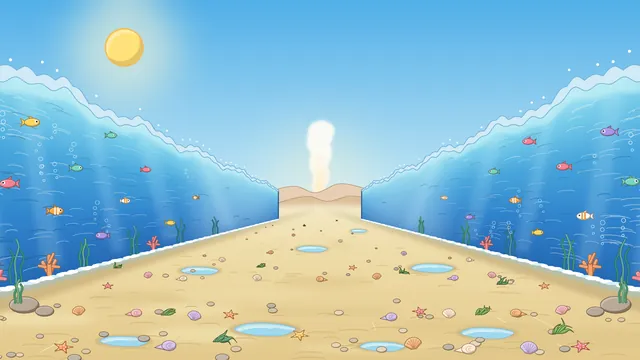
A travessia do mar VermelhoÊxodo 14Criar este episódio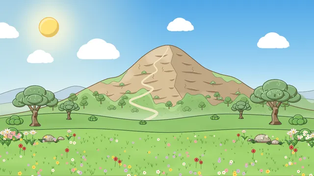
Os dez mandamentosÊxodo 19–20Criar este episódio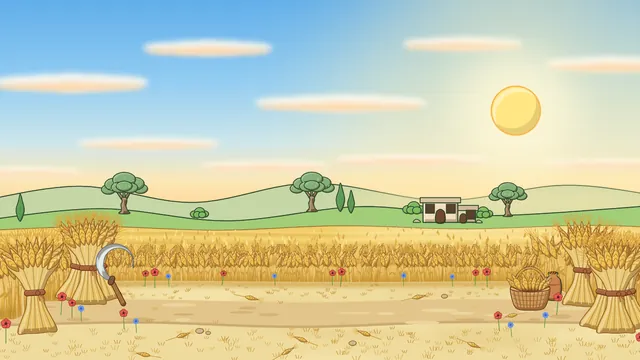
Rute e NoemiRute 1–2Criar este episódio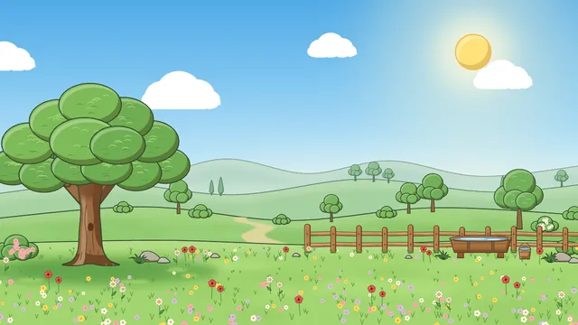
Davi, o pastor escolhido1 Samuel 16.1-13Criar este episódio Davi e Golias1 Samuel 17Assistir
Davi e Golias1 Samuel 17Assistir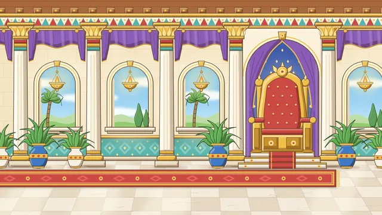
A rainha EsterEster 4–5Criar este episódio- Daniel na cova dos leõesDaniel 6Criar este episódio
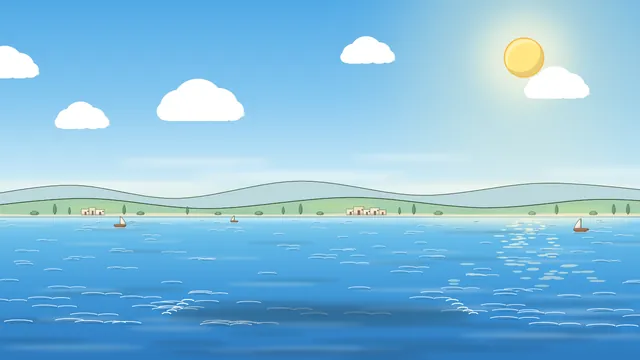
Jonas e o grande peixeJonas 1–3Criar este episódio
Vida de Jesus
 O nascimento de JesusLucas 2.1-20NatalCriar este episódio
O nascimento de JesusLucas 2.1-20NatalCriar este episódio- Os magos do OrienteMateus 2.1-12NatalCriar este episódio
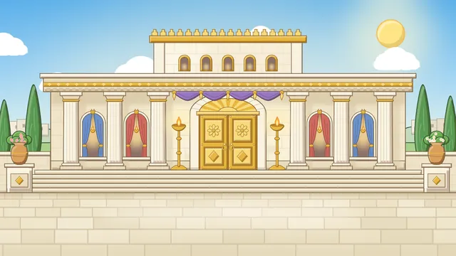
O menino Jesus no temploLucas 2.41-52Criar este episódio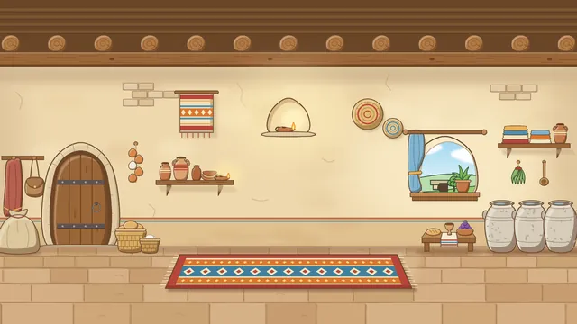
As bodas de CanáJoão 2.1-11Criar este episódio- Jesus acalma a tempestadeMarcos 4.35-41Criar este episódio
- A multiplicação dos pães e peixesJoão 6.1-14Criar este episódio
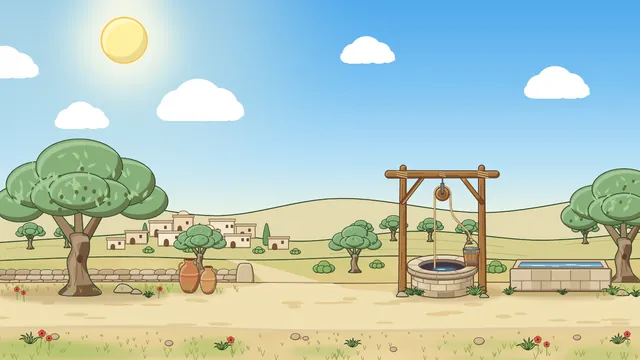
Jesus e a mulher samaritanaJoão 4.1-30Criar este episódio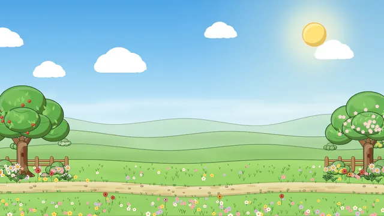
Jesus e as criançasMarcos 10.13-16Criar este episódio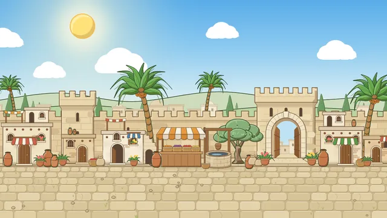
A entrada em JerusalémMateus 21.1-11PáscoaCriar este episódio A ressurreição de JesusJoão 20.1-18PáscoaCriar este episódio
A ressurreição de JesusJoão 20.1-18PáscoaCriar este episódio

Não achou a história que queria?
Peça pela passagem, ou conte o que a turma está vivendo: a Turma procura a história na Bíblia.
Começar grátis